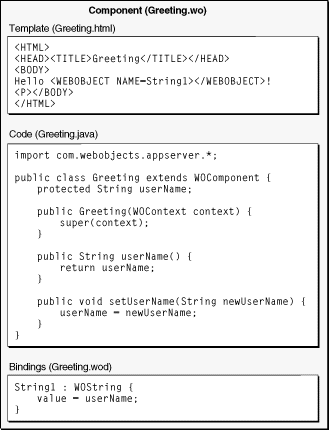

| PATH |

In WebObjects, a Web page is represented by a component, an object that has both content and behavior. A component can also represent a portion of a page but usually represents an entire page, so the word page is used interchangeably with the word component.
Components consist of
Separating the presentation code, event-handling logic, and bindings makes it much easier to maintain a Web application. A graphic artist can modify the presentation code, thus modifying the appearance of the page, without breaking its event-handling logic. A programmer can completely rewrite the event-handling logic without accidentally changing the page's layout.
You do not need to edit all three files separately. WebObjects Builder, a graphical component editing tool provided with WebObjects Development, edits the template, bindings, and event-handling code files simultaneously, relieving you of having to manually synchronize them. WebObjects Builder is described in more detail in "WebObjects Builder".
Figure 4-1 shows the three files in an example component.
Figure 4-1 The files of a WebObjects component
